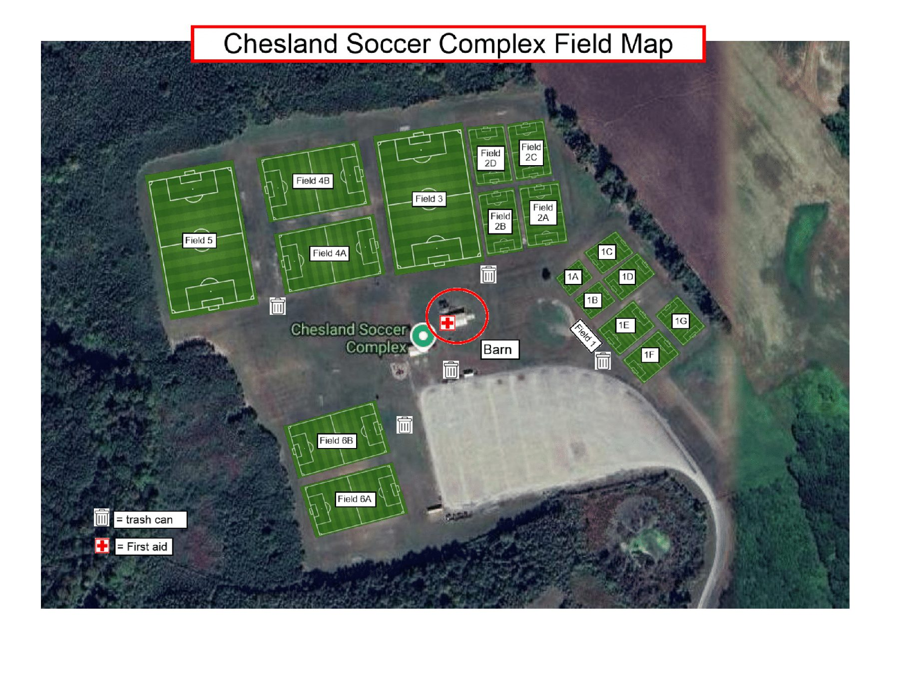

Chesland Soccer Complex
401 Elk Forest Rd, Elkton, MD 21921
Outdoor rec soccer and home travel soccer games are played at the Chesland Soccer Complex. It is the league’s home field and physical location, within Cecil County’s Chesland Park. Under a 2002 lease and management agreement with Cecil County, Cecil Soccer League plans, maintains, and operates the soccer facilities on about 88 acres of the park.
Visiting Chesland
- Address
- Chesland Soccer Complex, 401 Elk Forest Rd, Elkton, MD 21921
- Owner
- Cecil County, Maryland
- Operator
- Cecil Soccer League, Inc.
- Used for
- Spring and fall rec, home travel games, tournaments
Chesland field map



Cecil Arena
2706 North East Road, North East, MD 21901
Indoor winter rec soccer and indoor travel soccer games are held at the Cecil Arena.